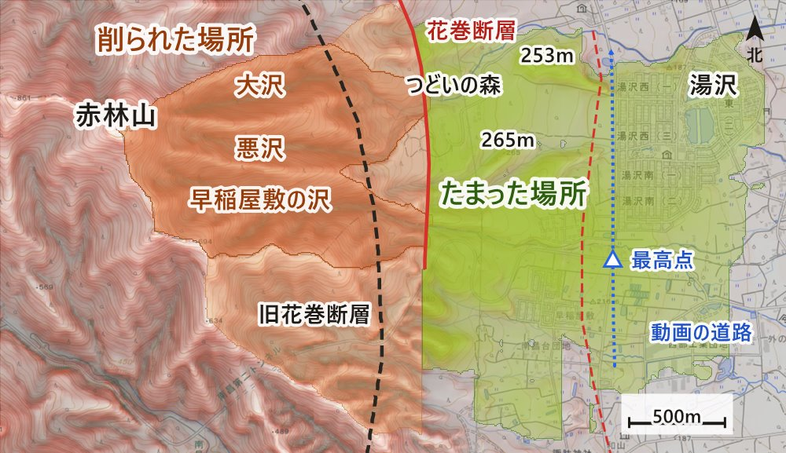
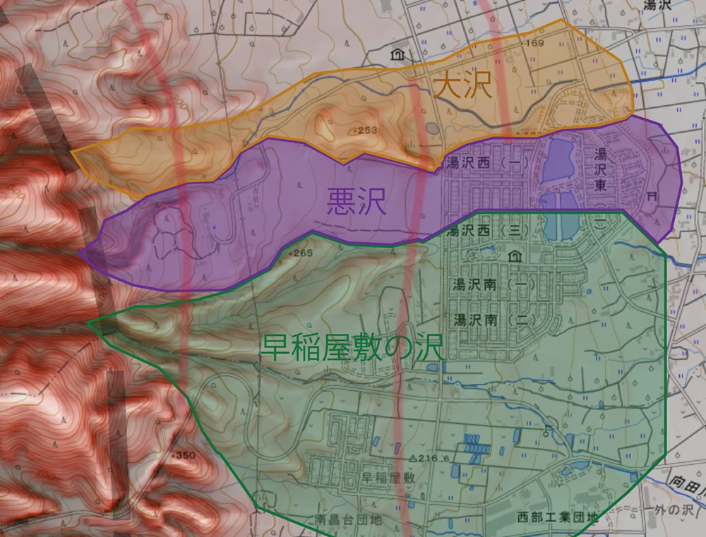
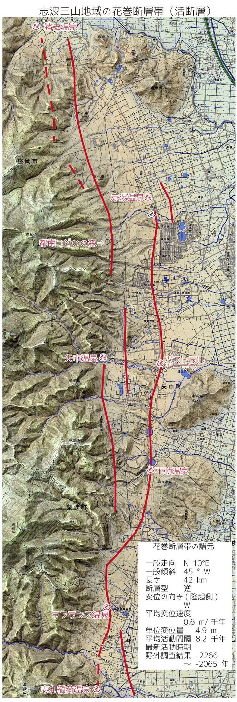
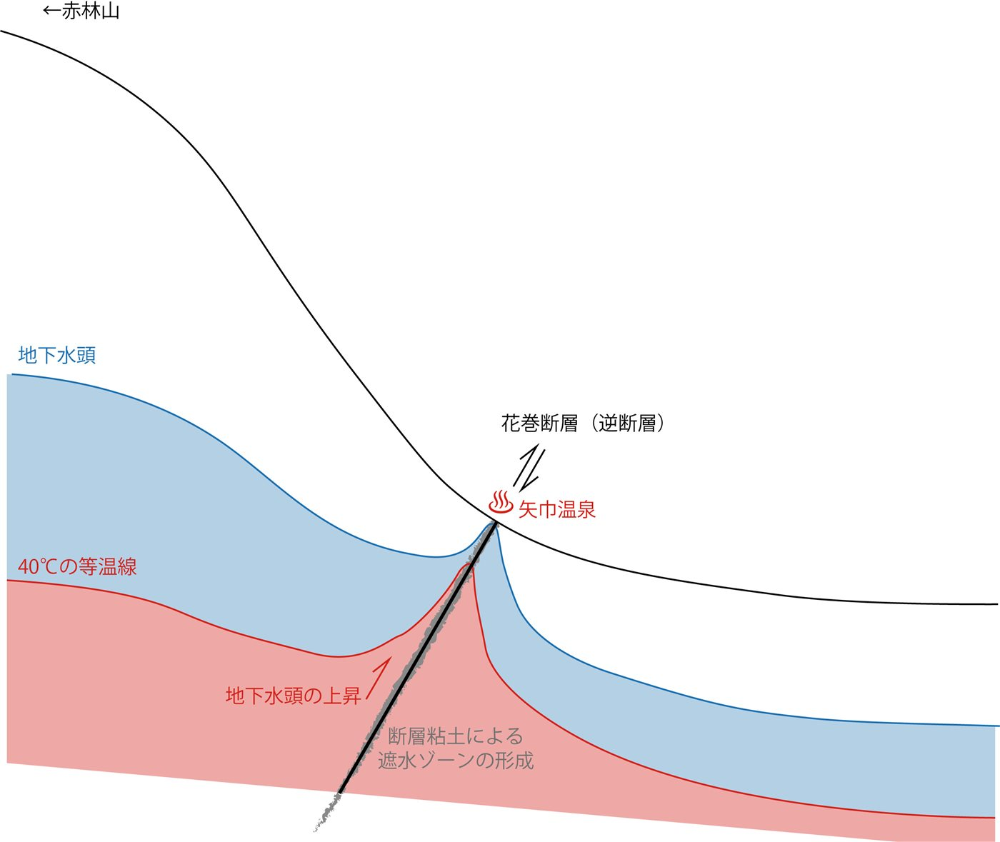
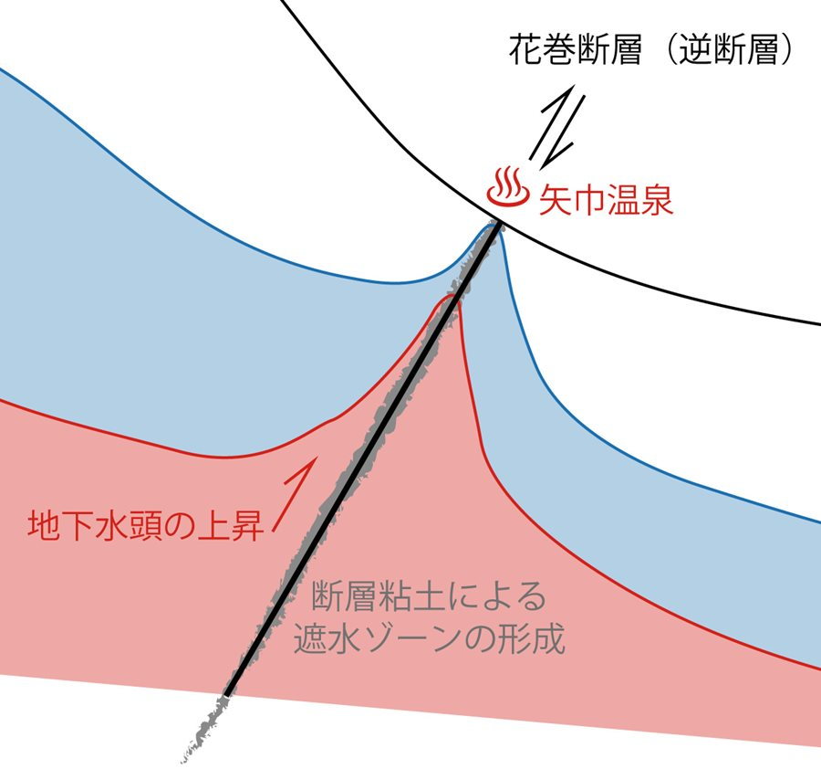

コラム「つどいの森は、なぜ平らなのか」では、つどいの森の平らな土地は、赤林山から流れ下った土砂が積もってできた、と書きました。2026年11月15日の研修会でこの話をしたところ、参加者からこんな疑問が出ました。「山から削られた土砂と、ふもとに積もった土砂。その量は、ちゃんと釣り合うのでしょうか？」 量が合わなければ、話のどこかがおかしいことになります。そこで、国が公開している標高データを使って、実際に計算してみました。
先に、結論
- 釣り合います。山から削られた量はおよそ5,400万m³、ふもとにたまった量はおよそ4,900万m³。同じくらいの大きさでした（東京ドームでおよそ40杯分）。
- ただし、大沢・悪沢・早稲屋敷の沢の3つの谷だけでは足りません。谷と谷のあいだの斜面や小さな谷からも土砂が来た、と考えると帳じりが合います。
- 岩がくずれて土砂になると、すき間ができてかさが2割ほど増えます。一方で、細かい泥などは水が遠くへ運び去ります。その割合を2〜3割とみると、ぴったり合います。
- 土砂を生んだ花巻断層は、地下の温かい水が上がってくる湯の通り道にもなっています。断層の筋に沿って温泉が並ぶのは、そのためと考えられます。
ことば：土砂収支＝削られた量と、たまった量の出入りをくらべること。家計簿の「出」と「入り」のようなものです。土量変化率＝岩や土を掘りくずしたとき、かさがどれだけ変わるかの割合。くわしくは、記事の最後の「ことばのメモ」をどうぞ。
研修会で出た、ひとつの疑問
11月15日の「いわて森のゼミナール運営業務／森林環境学習指導者研修会」で、つどいの森の土地の生い立ちを紹介しました。その質疑で出たのが、冒頭の疑問です。
平らな土地が山からの土砂でできたのなら、山のどこかに、その分の「へこみ」があるはずです。へこみが小さすぎれば、「土砂が積もってできた」という説明そのものが成り立ちません。逆に大きすぎれば、残りの土砂はどこへ行ったのか、という新しい疑問が生まれます。どちらにしても、量をくらべてみる価値がある問いでした。
家計簿のように、出と入りをくらべる
土砂の収支は、家計簿に似ています。山から出ていった量と、ふもとに入ってきた量をくらべるのです。ただし、そのまま引き算はできません。途中で2つの調整が入ります。
- 削られた量（出）山の谷の「へこみ」の大きさです。岩盤のままの体積で数えます。
- くずれると、かさが増える岩がくずれて土砂になると、粒と粒のあいだにすき間ができて、かさが増えます。土木の世界で「土量変化率」と呼ぶ数字で、ここでは1.2倍（1.1〜1.3倍）とします。
- 途中で、水が運び去る細かい泥や砂は、水に運ばれて北上川のほうへ流れていきます。ふもとに残るのは、その残りです。
- たまった量（入り）ふもとの高まりの大きさです。
つまり、削られた量 × 1.2 ×（1 − 流れ去った割合）＝ たまった量 になれば、帳じりが合ったことになります。
どこを測ったか
まず、場所を地図で確かめておきます。オレンジが土砂を出した場所、黄緑が土砂がたまった場所です。

赤色立体地図 ©アジア航測株式会社／国土地理院承認 作図：スーパー地形 色分け：国土地理院の標高データから計算
使ったのは、国土地理院の10m標高データです。地面を10mほどの升目に区切り、それぞれの升に標高が入っているデータで、誰でもインターネットで見ることができます。筆者の地図とは、赤林山や洞ヶ森など5つの山頂で位置を合わせました。ずれは5m以内です。
筆者が地形から読み取った、沢ごとの土砂の広がりも見ておきます。北から大沢、悪沢、早稲屋敷の沢の順に、それぞれの沢が自分の出口の前に土砂を積もらせています。いちばん広いのは、南の早稲屋敷の沢の範囲です。

赤色立体地図 ©アジア航測株式会社／国土地理院承認 作図：スーパー地形 範囲の書き込み：川村晃寛
横から見ると、こうなります。山の中の谷の空洞（オレンジ）と、花巻断層の東の高まり（黄緑）の位置関係をつかんでください。
- 削られた量（谷の空洞）
- たまった量（高まり）
- 旧花巻断層
- 花巻断層
削られた量：谷の「へこみ」をはかる
谷の左右の尾根と尾根を結んで、谷にふたをするように面を張ります。そのふたと、いまの谷底とのあいだの空間が、削られた量です。山の中で3つの沢を横に切ると、こう見えます。
| 範囲 | 流域の広さ | 削られた量 |
|---|---|---|
| 大沢＋悪沢（花巻断層の手前で合流） | 0.70 km² | 約1,600万m³ |
| 早稲屋敷の沢 | 0.65 km² | 約1,900万m³ |
| 3つの沢の計 | 1.35 km² | 約3,500万m³（2,300万〜4,900万） |
| まわりの斜面も含めた計 | 2.35 km² | 約5,400万m³（3,500万〜6,400万） |
カッコの中の幅は、ふたの張り方（どのくらい離れた尾根まで結ぶか）を変えたときの違いです。「まわりの斜面」は、谷と谷のあいだの三角末端面や、小さな谷のことです。
たまった量：ふもとの「ふくらみ」をはかる
花巻断層より東の土地は、北の大沢の谷と、南の谷にはさまれて、ふっくらと盛り上がっています。両側の谷を直線で結んだ面より上を、たまった量として数えました。
- 全体｜約4,900万m³。広さは約3.4km²、厚さは平均14m、厚いところで35m前後
- 北側（大沢・悪沢側）｜約1,800万m³。沢ごとの図のオレンジと紫の範囲です
- 南側（早稲屋敷の沢側）｜約3,100万m³。沢ごとの図の緑の範囲です
- 253mと265mの小山｜合わせて約340万m³。全体から見ると、わずかです
動画で見る、ふくらみの頂上
南側のふくらみは、車で走ると体で感じられます。矢巾町広宮沢から盛岡市湯沢のつどいの森の入口まで、湯沢西の道路（志和稲荷街道）を北へ走った車窓の動画です。道は花巻断層とほぼ平行に赤林山のふもとを走り、途中で早稲屋敷の沢を横切ります。右上の標高のグラフに注目してください。
志和稲荷街道を北へ（1分53秒）。YouTubeで開く →
沢を横切るのなら、ふつうは谷に下るはずです。ところがこの道は、早稲屋敷の沢を横切るあたりで最高点（クレスト）になり、そこから大沢に向かって30mほど下っていきます。沢が運んだ土砂が、沢の出口に扇のように積もって盛り上がっているためです。こうした地形を扇状地といいます。
標高データで同じ道をたどっても、最高点は212m、大沢側は182mと、動画と同じ形になりました（動画のアプリの表示は5mほど高めです）。南側の高まりが北側よりも大きいこととも、つじつまが合います。
帳じりを合わせる
いよいよ計算です。かさの増え方を1.2倍、水が運び去った割合を3割として、くらべてみます。
| 土砂を出した場所 | 削られた量 | 1.2倍にすると | 3割が流れ去った残り | たまった量 | 判定 |
|---|---|---|---|---|---|
| 3つの沢だけ | 約3,500万m³ | 約4,200万m³ | 約2,900万m³ | 約4,900万m³ | 約2,000万m³足りない |
| まわりの斜面も含める | 約5,400万m³ | 約6,400万m³ | 約4,500万m³ | 約4,900万m³ | ほぼ釣り合う（差は1割以内） |
3つの沢だけだと、水が1粒も運び去らなかったとしても、まだ足りません。谷と谷のあいだの斜面や小さな谷からも土砂が来たと考えると、帳じりが合います。流れ去った割合がおよそ24％のとき、ぴったり一致します。
かさの増え方や流れ去った割合は、仮定した数字です。下の計算器で、自分で動かしてみてください。
計算器はJavaScriptで動きます。
「埋もれた部分の厚さ」：高まりのうち、両側の谷を結んだ面より下に埋もれている土砂は、この計算では数えていません。その厚さを仮に入れると、1mごとに約340万m³ずつ、たまった量が増えます。
3つの沢だけでは、なぜ足りないのか
理由は2つ考えられます。
- 土砂を出したのは、谷だけではない断層で持ち上がった山のふもとには、三角形の斜面（三角末端面）が並びます。谷と谷のあいだのこうした斜面も崩れ、土砂を出してきました。地図の薄いオレンジの部分です。
- 尾根そのものも、低くなった谷にかぶせた「ふた」は、いまの尾根の高さで張っています。けれども長い時間のあいだに、尾根も少しずつ削られて低くなったはずです。たとえば3つの沢の流域の尾根が、いまより平均17m高かったとすれば、3つの沢だけでも帳じりが合います。
北と南に分けると、もう少し見えてきます。北側（大沢・悪沢）は、3つの沢だけでもほぼ合います（足りないのは、流域の平均で8m分）。南側（早稲屋敷の沢）は、かなり足りません（同じく27m分）。早稲屋敷の沢は3つのうちで流域がいちばん広く、動画で見た高まりもこの沢のものです。南側には、そのさらに南の小さな谷からの土砂も加わっていると考えられます。
どちらの理由も、「断層が何度も山を持ち上げ、そのたびに斜面がくずれて土石流になった」という、前のコラムの筋書きとよく合います。
山を持ち上げた断層は、湯の通り道でもある
ここまでの話の裏には、いつも花巻断層がいました。山を持ち上げ、くずれやすい斜面をつくり、土砂を生み出したのはこの断層です。ところがこの断層には、もうひとつの顔があります。温泉です。

地図に温泉を書き込んでみると、北から猪去温泉、赤湯温泉、矢巾温泉、パストラルバーデン、不動温泉、ラフランス温泉、志和稲荷温泉と、どれも断層の筋のすぐそばにあります。赤湯温泉は、動画の道路沿いを走る「東の筋」の北の端に寄り添っています。
けれども、このあたりに火山はありません。それなのに、なぜ断層に沿って温泉がわくのでしょうか。
火山がなくても、地下は温かい
地面の下は、深くなるほど温かくなります。目安は、100m深くなるごとに約3℃。地表の平均気温を10℃とすると、40℃に届くのは地下1,000mほどです。つまり、雨水が地下深くまでしみこめば、火山がなくても温泉の温度になります。問題は、その温かい水を、冷めないうちに地表まで連れてくる通り道です。
断層粘土が、地下水をせき止める
その通り道を、断層がつくります。下の図は、赤林山から平野へ向かう断面です。青は地下水のたまっているところで、その上のふちが地下水の水位（地下水頭）。赤は、地下の温度が40℃をこえるところです。

断層のまわりを拡大すると、こうなります。

- 山にしみこんだ雨水赤林山に降った雨は地下にしみこみ、山の下では地下水の水位が高くなっています。水は高いほうから低いほうへ、つまり山から平野へ向かって、地下をゆっくり流れます。
- 断層が、水の壁になる断層がずれるたびに、岩がすりつぶされて、きめの細かい粘土ができます。これを断層粘土といいます。粘土は水をほとんど通さないので、断層面に沿って、地下に水の壁（遮水ゾーン）ができます。
- せき止められた水が、断層に沿って上がる山からの地下水は、この壁にせき止められて、壁の手前で水位が持ち上がります（地下水頭の上昇）。行き場を失った水は、壁に沿って上へ逃げます。深いところの温かい水も、いっしょに押し上げられます。
- 温かさが、地表近くまで届く深い水が冷めないうちに上がってくるので、40℃の線が断層に沿って地表近くまで持ち上がります。そして断層が地表に顔を出すところに、矢巾温泉があります。
地図の温泉が断層の筋に並ぶのは、この仕組みが、断層に沿ってどこでも働いているためと考えられます。土砂をつくった断層が、湯の通り道もつくっているのです。
花巻断層帯の「履歴書」
地図の右下にまとめた、花巻断層帯の数字です。
| 向き | 北から東へ10度（N10°E）。ほぼ南北に走ります |
|---|---|
| 傾き | 西へ45度傾いて、地下にもぐります |
| 長さ | 42km |
| 断層のタイプ | 逆断層。西側が持ち上がります |
| ずれの速さ（平均変位速度） | 1,000年に0.6m |
| 1回のずれ（単位変位量） | 4.9m |
| 動く間隔（平均活動間隔） | 8,200年 |
| 最後に動いた時期 | 紀元前2266〜2065年（野外調査の結果） |
1回に4.9mずれて、8,200年ごとに動くなら、平均すると1,000年に0.6m。表の数字どうしも、つじつまが合っています。
このペースでずれ続けると、1万年で6m、10万年で60mになります。前の節で、3つの沢だけで帳じりを合わせるには「尾根が平均17m高かった」必要がありました。それは、この断層のずれの、およそ3万年分にあたります。ざっとした比較ですが、山は持ち上がりながら削られ、その土砂がふもとにたまり、同じ断層が湯の通り道にもなる。土砂の帳じりと温泉は、一本の断層がつくった、ひとつながりの出来事なのです。
子どもに話すなら
山の谷は、長い時間をかけて、雨や土石流に削られてできました。削られた土は、ふもとに運ばれて、丘になりました。谷のへこみと、ふもとの丘の大きさを計算でくらべてみると、だいたい同じでした。東京ドーム40杯分くらいです。少しちがう分は、川が遠くまで運んでいった泥や、谷のあいだの斜面からくずれてきた土です。山を持ち上げた断層は、地下の温かい水が上がってくる通り道にもなっていて、そのそばに温泉があります。
まだ分からないこと
数字はあくまで、大まかな見積もりです。結果を左右する点を挙げておきます。
- 高まりの底の面｜両側の谷を結んだ面を底としました。谷そのものも削られているので、厚さを多めに見ているかもしれません。逆に、その面より下に埋もれた土砂は数えていません
- 253mと265mの小山｜中に岩盤の芯があるなら、たまった量は約340万m³減ります
- 花巻断層の東の筋｜湯沢西の道路沿いの筋が西側を持ち上げていれば、高まりの一部は土砂ではなく、地面そのものの盛り上がりです
- かさの増え方と、流れ去った割合｜どちらも一般的な値を仮定しています。ボーリングの記録や地層の観察で確かめられれば、見積もりは締まります
- 断層と温泉｜断面図は、考え方を示した模式です。それぞれの温泉の湯がどの深さから来ているか、どんな成分かは、温泉ごとに確かめる必要があります
研修会の声から
研修会のアンケートには、ほかにもさまざまな声が寄せられました。この記事は、その声にもこたえるつもりで書いています。
- 一般の人や子どもに話せる、やさしい版がほしい｜結論を冒頭に置き、家計簿のたとえで組み立てました。上の「子どもに話すなら」も、そのための一案です
- 検証してみたいことが、たくさんあった｜計算に使った標高データは、地理院地図などで誰でも見られます。仮定の数字は計算器で動かせます。ちがう結果になったら、ぜひ教えてください
- 花巻断層と温泉の話が、興味深かった｜上の「山を持ち上げた断層は、湯の通り道でもある」の節にまとめました
- 来年は現地視察を｜すぐ下の「歩いて、確かめてみる」に、現地で見るところをまとめました
- AIは、ぜひ使いたい／AIは必要ない｜両方の声がありました。この記事の計算と作図には、生成AI（Claude）を使っています。ただ、問いを立てたのは研修会の参加者で、前提の数字を決めるのも、現地で確かめるのも人です。AIは、電卓や製図板と同じ道具のひとつとして使っています
歩いて、確かめてみる
- 湯沢山（253m）｜高まりの北の端の小山です。北側の大沢の谷へ向かって、地面が一段下がっているのが分かります
- 湯沢西の道路（動画の道路）｜早稲屋敷の沢のあたりが最高点です。交通量が多く、大型車も通る道路です。歩いて確かめるときは、車に十分注意してください
- 赤林山への直登ルート｜谷の深さ70〜110mを、足の疲れで確かめられます
- 矢巾温泉・赤湯温泉｜花巻断層の筋のすぐそばの温泉です。湯につかりながら、足もとの断層を想像してみてください
ことばのメモ
- 土砂収支
- ある場所から削られた土砂の量と、たまった土砂の量の出入りをくらべること
- 土量変化率
- 岩や土を掘りくずしたとき、かさがどれだけ変わるかの割合。岩はくずすと、すき間ができてかさが増えます
- 流域
- 降った雨が、ある沢に集まってくる範囲。尾根（分水界）で囲まれています
- 扇状地
- 沢が山から出たところに、運んできた土砂が扇のように広がって積もった地形。まん中が盛り上がります
- 三角末端面
- 断層で山が持ち上がるとき、ふもとに並んでできる三角形の斜面
- 旧花巻断層
- いまの花巻断層より西の山腹にある、古い時代に動いた断層の跡
- 標高データ
- 地面を細かい升目に区切り、それぞれの升に標高を入れたデータ。この記事では国土地理院の10mの升目のものを使いました
- クレスト
- 道や地面の、上り坂から下り坂に変わる頂上の部分
- 逆断層
- 両側から押されて、断層の片側がもう片側に乗り上げるようにずれる断層。花巻断層では西側が持ち上がります
- 断層粘土
- 断層がずれるときに岩がすりつぶされてできる、きめの細かい粘土。水をほとんど通しません
- 地下水頭
- 地下水の「水位」にあたるもの。水は、地下水頭の高いほうから低いほうへ流れます
- 等温線
- 地下の温度が同じところを結んだ線
計算の方法：標高データは国土地理院の標高タイル（10mメッシュ）。削られた量は、半径300mの円を転がして谷にふたをする方法で求め、幅は半径150〜500mと、分水界に膜を張る方法の違いです。たまった量は、北の大沢の谷と南の谷を直線で結んだ面より上の体積です。計算と作図には生成AI（Claude）を使いました。